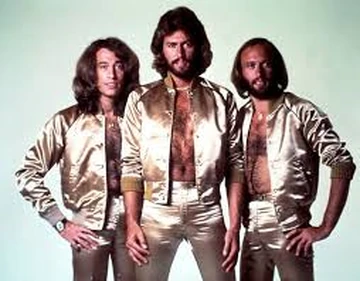

My Favorite Musical Group

My Favorite Musical Group as of right now is the Bee Gees.
The musical group was formed by three brothers:
Barry Gibb
Robin Gibb
Maurice Gibb
You can find out more at their website:
Bee Gees Offical Website
My favorite songs
How Deep Is Your Love:
I like this song for its harmonies and the melody is by far my favorite.
More Than A Women:
This song has nice funk to it that I always enjoy.
Stayin'Alive:
This is one of the most famous songs by the Bee Gees.